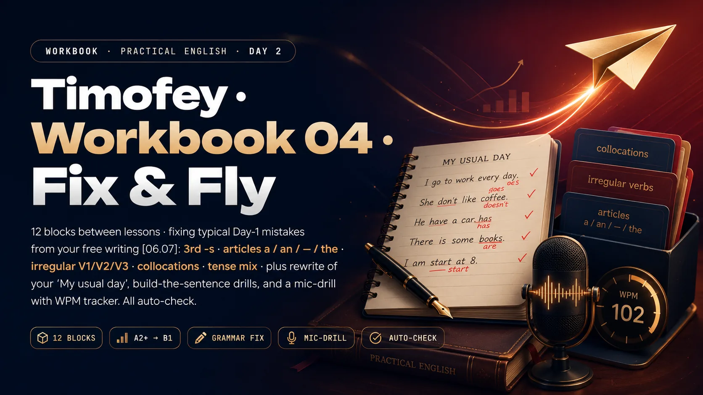

Слова из твоей тетради 06.07 в правильном написании. Тап → перевод + пример. ▶ → произношение.
He / she / it / имя / компания — глагол получает -s. Один клик → зелёный/красный фидбек + пояснение.
Впиши a, an, the или — (тире, если артикль не нужен).
Впиши правильную форму глагола (Past Simple или после have/has/had).
Тап на слово слева → тап на пару справа. Устойчивые сочетания из бизнес-английского.
Правильная пара → зелёная. Неверная → красный shake.
Рутина или прямо сейчас? Смотри на сигналы (every / usually · right now / at the moment).
Результат сейчас или процесс всё ещё идёт? Смотри на сигналы (already / just — Perfect · for / since / lately — Perfect Continuous).
Ниже твой оригинальный абзац с типичными ошибками. Задача — впиши правильную форму. Auto-check.
Слова в неправильном порядке. Напиши правильное предложение в поле → Check.
Прочитай текст, потом 10 вопросов с выбором ответа. Обрати внимание на глаголы — там 4 времени сразу.
My name is Elena and I work in the finance department of a big logistics company. Every morning I arrive at the office at eight thirty. I always have a coffee and check my schedule before the first meeting at nine.
Right now our team is preparing a big presentation for the board. We have been working on it for three weeks. My boss has already approved the first draft, but she wants us to improve the numbers section.
My colleague Marco speaks five languages. He is talking to a foreign client from Italy at the moment. He has been introducing our new services since Monday, and the client seems interested.
I usually go home by underground at six. Yesterday I came home very late because I made two important calls. I had a small ritual — a cup of tea and a book — before I went to bed.
Tomorrow we have a team meeting at ten. I am going to present our progress. I hope the boss will approve everything and we can finally send the presentation.
Прослушай диалог Marco и Timofey. Первый раз — общий смысл. Второй раз — детали для вопросов.
Marco: Hi Timofey! Do you have a minute?
Timofey: Sure, Marco, what is it?
Marco: I have been working on the new schedule for two weeks. The boss has just approved it. Every team meets on Mondays now.
Timofey: That is good news. My team is preparing a presentation about the internal system. We are trying to improve the process.
Marco: Excellent. When do you have your next meeting?
Timofey: I have a meeting at three p.m. today. I usually have a coffee before it. Do you want to join?
Marco: I would love to, but I am leaving the office at two. See you tomorrow!
Полный абзац про твой типичный понедельник. Проверяй себя по чек-листу справа — 8 пунктов. Отправь готовый текст в чат.
Напиши абзац про tomorrow at work. Используй минимум 5 слов из vocab-01 и минимум 3 времени (Present Simple / Continuous / Perfect / Perfect Continuous).